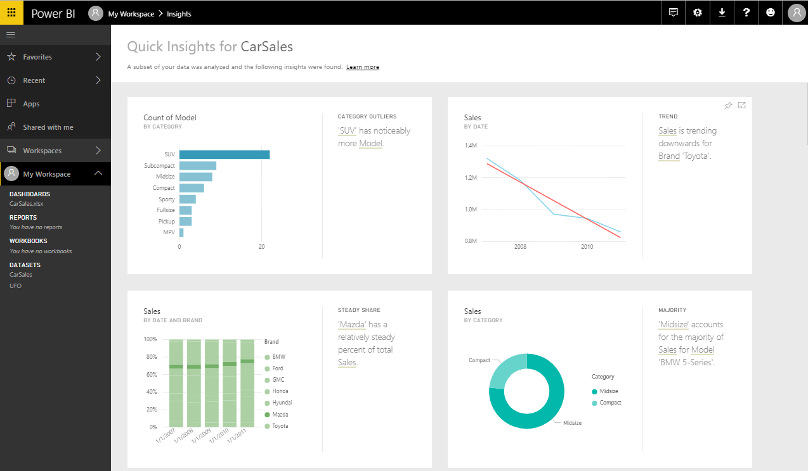
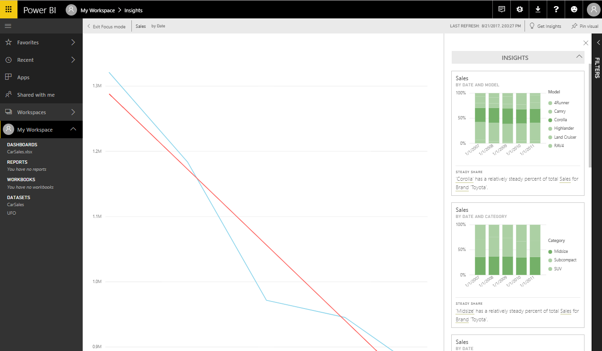

Experience in Microsoft Research AsiaThese are my involved projects in Microsoft Research Asia. I'm working in Software Analytics Group, supervised by Dr.Zhouyu Fu. Auto InsightsAuto Insights is a research framework for automatic mining and recommendation of various insights from multi-dimensional data. It also involves research and engineering to allow near real-time experiences of insight mining based on commodity database systems, or even in cloud environments. As an enabling technique towards smart analytics, Auto Insights has been helping Microsoft demonstrate industry-leading vision and technical strengths in the Business Intelligence market, via a series of releases with Power BI. Quick Insights of Power BI released on Dec 1st, 2015, powered by Auto Insights For a given working table, an EXCEL worksheet for example, Auto Insights can automatical analysize the data of the table and return several insights that user most possibly interested in.   |